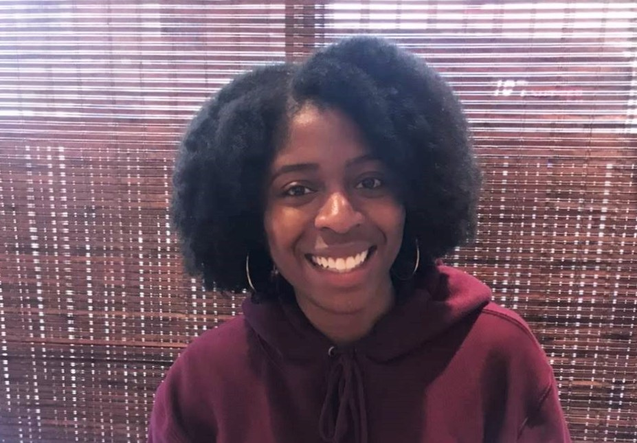

About Me

Greetings! Quick fact about me is that Washington is the sixth state that I've lived in. Five out of six were over the last 10 years of my life.
I lived in Senatobia, MS my first two years of college, then moved to Atlanta, GA for my last two (actually 3) years of college.
I relocated to Fargo, ND for my first adult job and stayed there two and a half years. I then moved to Dallas, TX for my husband's job, where I stayed for one year. Finally, here I am in Seattle (really Bothell), where I've resided since March.
I have things that I love and strongly dislike about all of the places I've lived, and they've all played a crucial part in who I am today.
I'm a basketball junkie. I love to have debates about basketball with absolutely anyone, including my manager. Organized basketball was a major part of my life.
I was on a basketball team from age 8 all the way through collegiate athletics, ending at age 21. This is also a huge part as to why I'm in this bootcamp.
I also LOVE the play Hamilton. I've seen it twice, once in London and once in San Francisco. I'm planning to see it at least 5 more times.
I like to cook lasagna and make taco salad. Not at the same time though. Actually, I have not tried that combination but I'll assume it's not a good fit.